Organic placement and straight routing (visual review)
Each drawing is one combination of one graph, with every direction set to auto. Check nodes, edges and their overlaps by eye.
asymmetric-tree-hierarchical-orthogonal.svg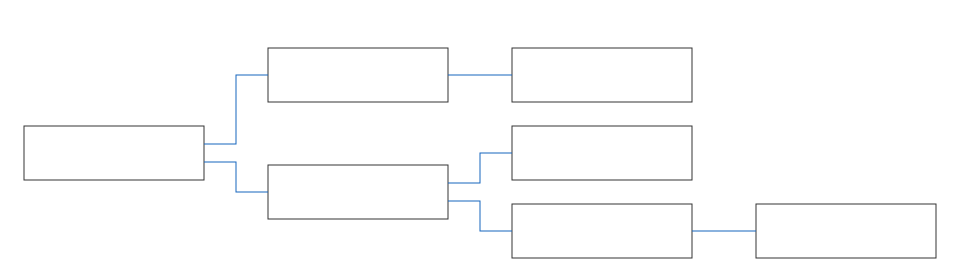
asymmetric-tree-organic-orthogonal.svg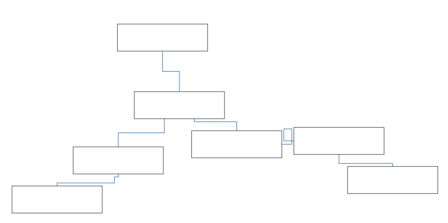
asymmetric-tree-organic-straight.svg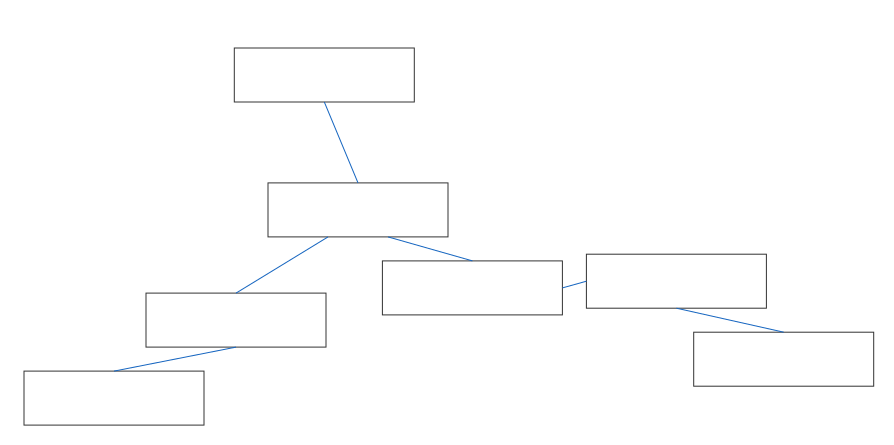
mixed-tree-radial-hierarchical-orthogonal.svg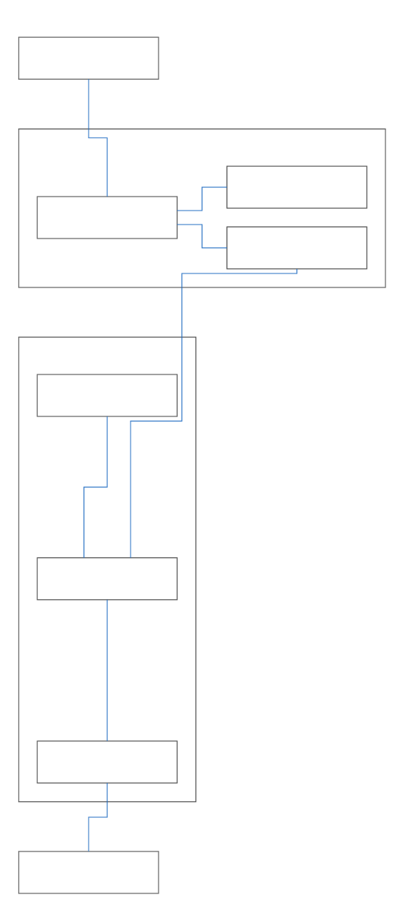
mixed-tree-radial-organic-orthogonal.svg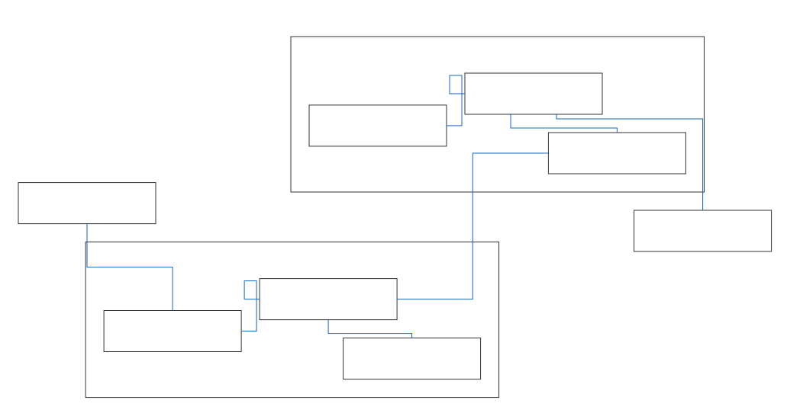
mixed-tree-radial-organic-straight.svg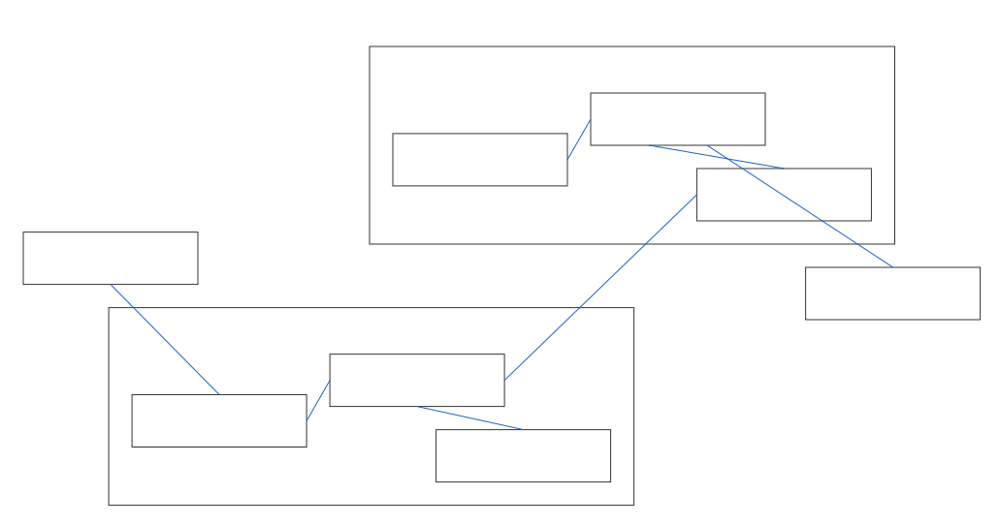
network-vlan-hierarchical-orthogonal.svg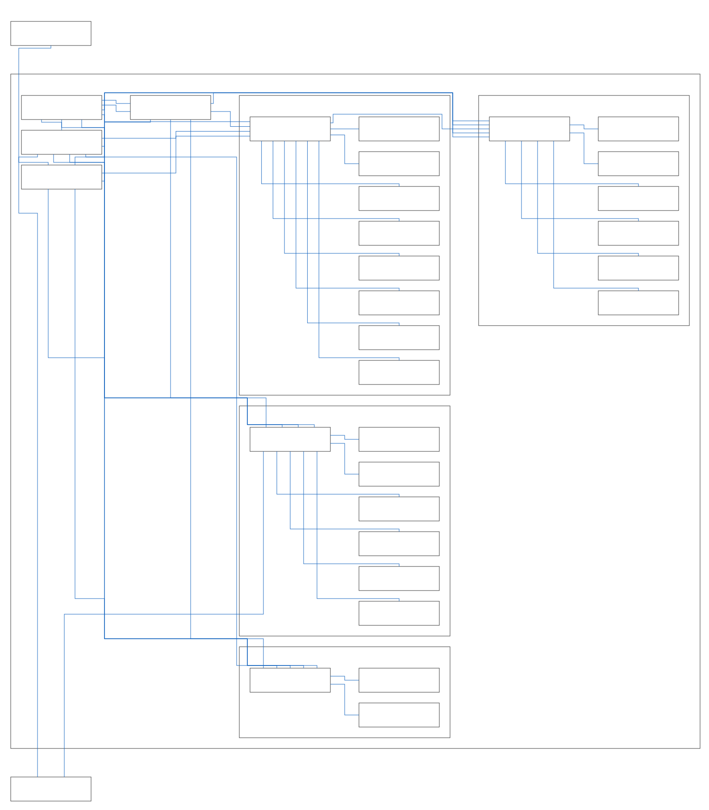
network-vlan-organic-orthogonal.svg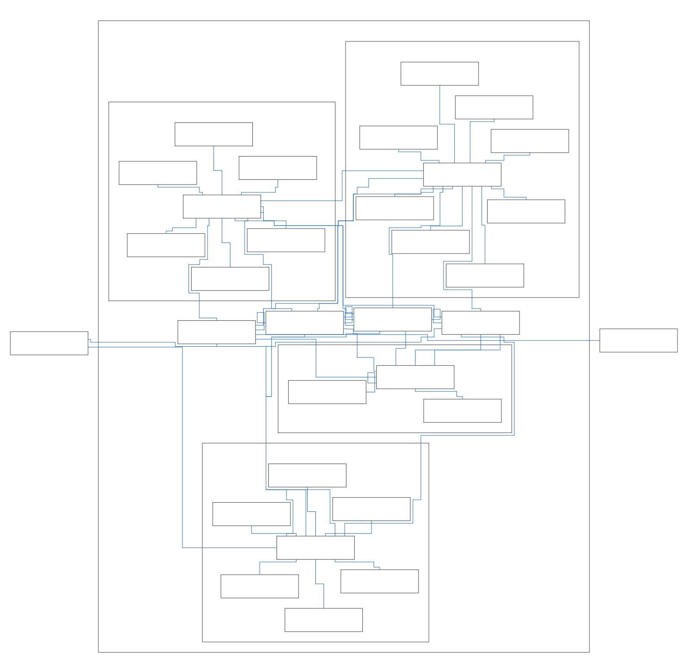
org-chart-hierarchical-orthogonal.svg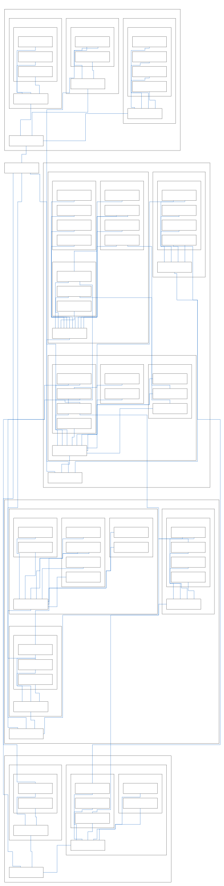
org-chart-organic-orthogonal.svg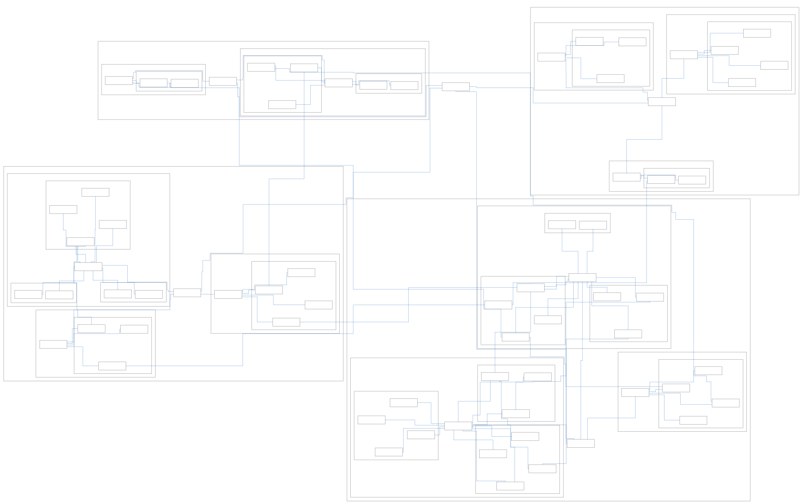
org-chart-organic-straight.svg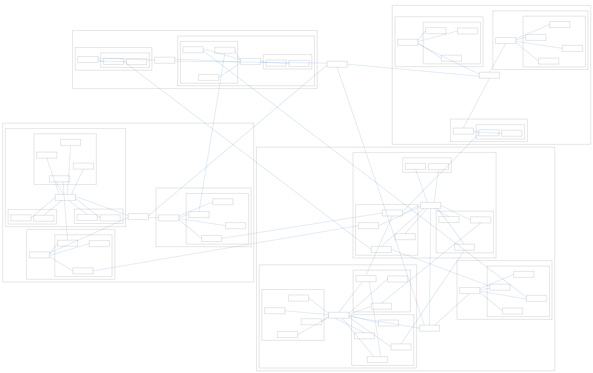
state-tcp-hierarchical-orthogonal.svg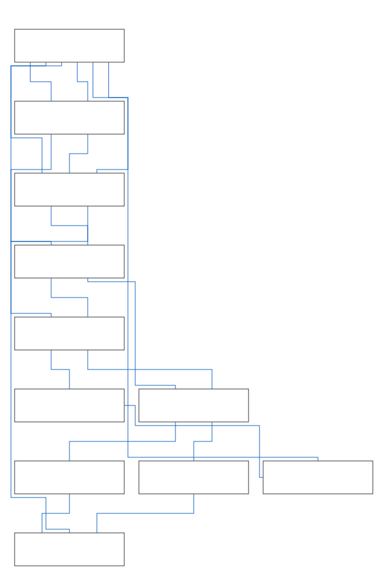
state-tcp-organic-orthogonal.svg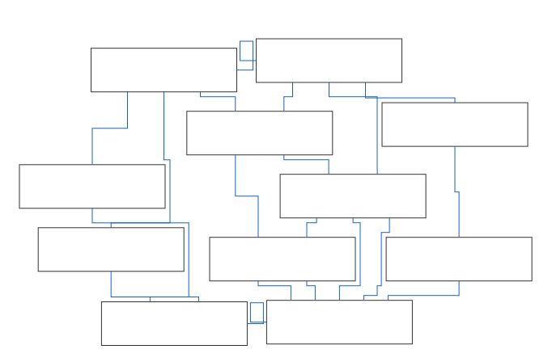
workflow-dag-hierarchical-orthogonal.svg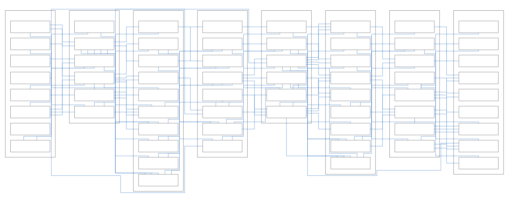
workflow-dag-organic-orthogonal.svg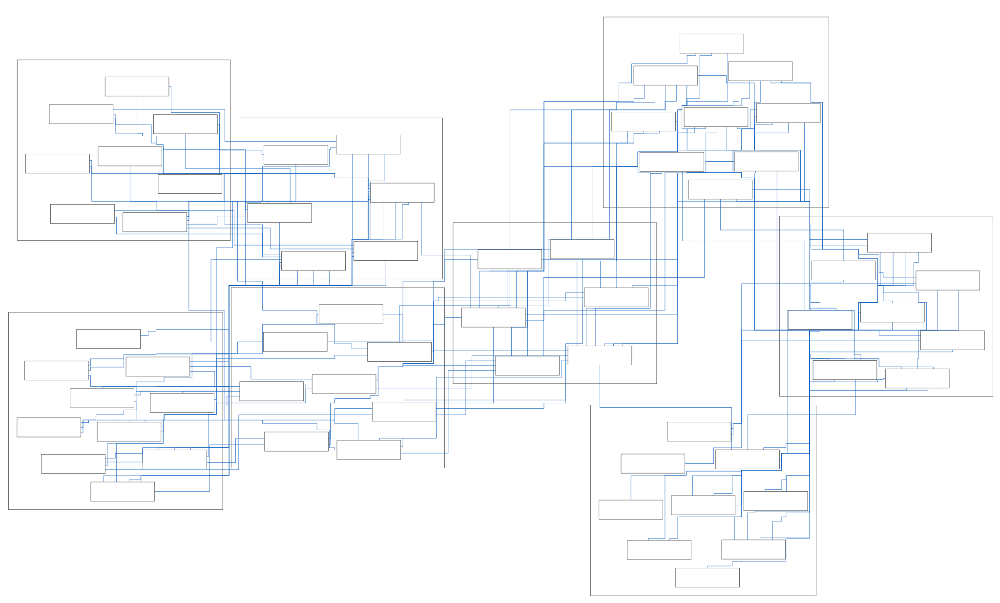